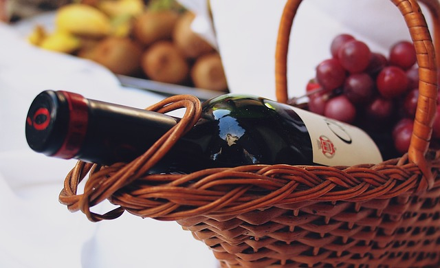
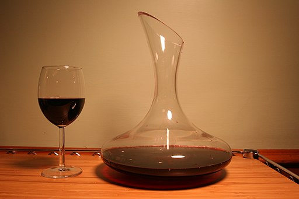

Servir el vino

- Los vinos que tienen sedimentos pero no precisan decantación deberán servirse en cestillo.
- Los vinos que no posean sedimentos, se servirán en la misma botella.

- Los vinos que necesiten decantarse para su oxigenación, el realce de sus cualidades organolépticas y la retirada de los sedimentos, se servirán en un decantador.
Cómo abrir una botella
Primeramente se procede a cortar la cápsula por debajo del anillo del gollete de la botella, limpiando con un paño la parte superior del tapón y el cristal de la botella que haya quedado al descubierto.
Con un sacacorchos apropiado se introducirá la espiral por el centro del corcho, evitando que lo traspase, y se extraerá suavemente. En esta operación lo que se mueve es el sacacorchos, no la botella, para evitar que si hubiera sedimentos en el fondo éstos se diseminen por todo el contenido.
Si es necesario, se limpiará con cuidado el interior del cuello de la botella, eliminando posibles partículas de corcho. Una vez extraído el corcho, se procede a su observación, oliendo la parte que ha estado en contacto con el vino, con el fin de obtener información sobre su estado, su nivel de oxidación, percibir los posibles olores a corcho húmedo, etc.